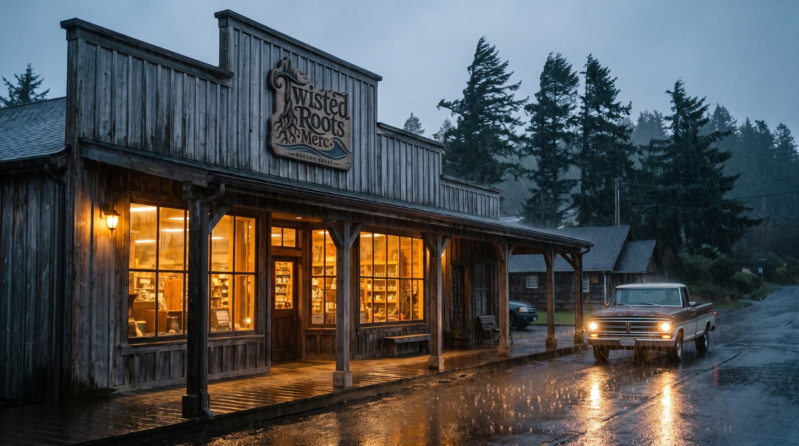
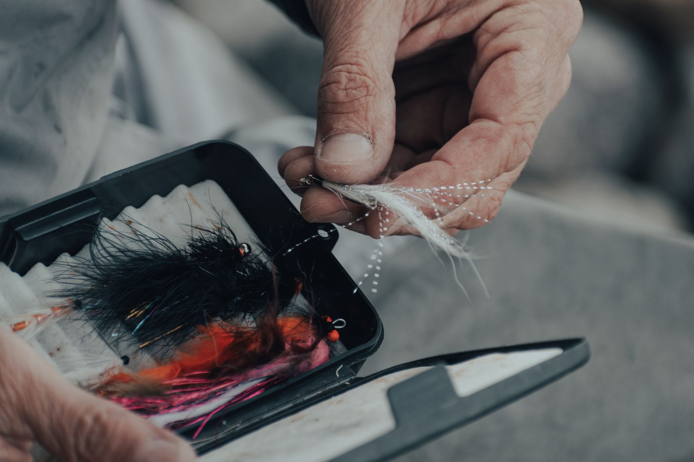
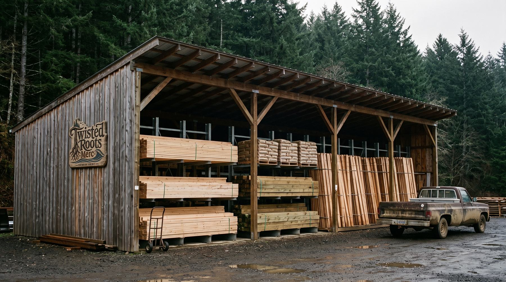
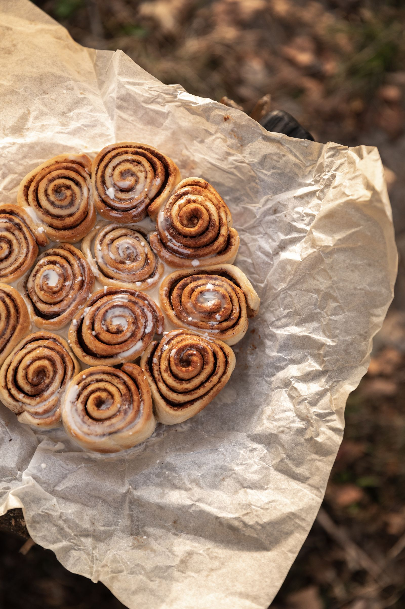
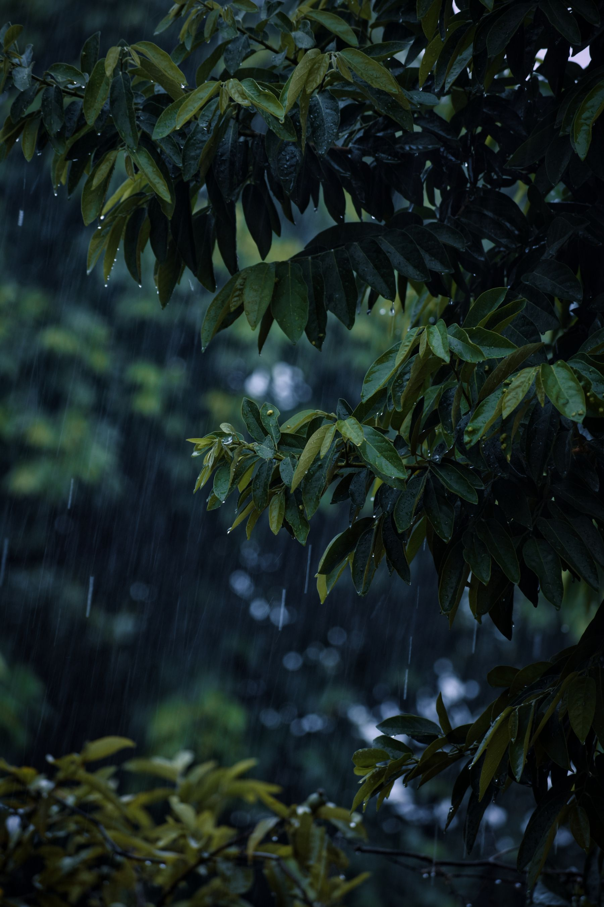
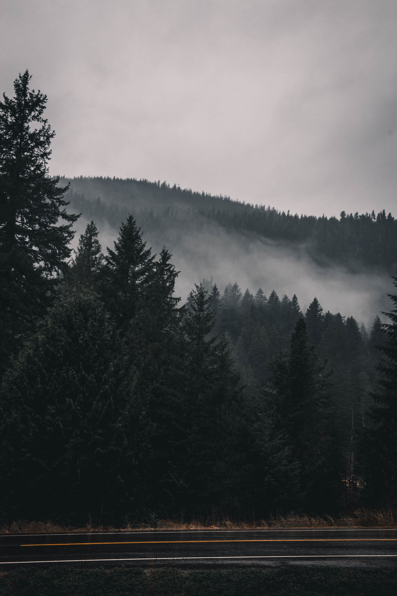

Notices · Weather · The river · What we stocked
The Board
What's going on, written down.
Same board, different wall
There's a real one by the register. This is the rest of it.
The corkboard inside holds about nine index cards, and half of them are somebody's hay-for-sale from March. So the long stuff lives here — road notes, what the power did, what's running in the river, what we finally got in because eleven people asked. Eric writes the fishing ones. Carrie writes the rest, usually Sunday night, usually after the till is counted.
Short things, checked first
Notices
Hours, roads, power. If something's changed today, it's at the top of this list before it's anywhere else.
What ends up on here
These jump you down the page. They don't filter anything. It's one page and it isn't very long.
August 6, 2026 · Around town
The last week of August, which is mostly poster board
The school supply shelf goes up the first week of August and comes down when it stops selling, which is usually the third week of September. It is not a big shelf. It's the things people genuinely cannot get at seven at night, which after two years of watching is a shorter list than the one the store catalogs suggest.
Poster board is number one and it isn't close. Wide-rule notebooks, pencils that are actually No. 2, a good eraser, glue sticks, the specific blue folder with the pockets and the brads, index cards, a protractor in October when geometry starts. Composition books because somebody's teacher asks for them by name every year. We keep those deep and we don't bother with the rest.
If the supply list came home on paper and you've already lost it, we've got the copies taped inside the door — walk in and take a picture of it with your phone, that's what they're there for. If your kid's list has something on it we don't carry, tell Carrie at the counter and it will be here next August, because the lists barely change and she writes them down.
One more thing about August: Nesika Illahee weekend fills the town up and fills our lot, and that's a good problem. If you're just running in for milk that Saturday, park along the street and come in the front. We'll still be open.

July 28, 2026 · The river
What's running in the Siletz, roughly by month
This gets asked at the counter more than any other question that isn't about the bathroom key. Here's the honest shape of the year on this river. Dates move by weeks depending on rain, and the regulations move too, so check the current ODFW rules and the weekly recreation report before you go. This is a starting point, not a rulebook.
| When | What's in the river | Where people work it | What they buy here |
|---|---|---|---|
| Dec – Mar | Winter steelhead. Hatchery fish first, wild fish later in the run. | Upper river and the drifts; bank access when it isn't blown out | Corkies, yarn, egg cure, 12 lb leader |
| Apr – Jun | Spring chinook, in decent water years | The gorge and the deeper holes above town | Spinners, heavy leader, bank sinkers |
| May – Sep | Summer steelhead — one of the few coast rivers that has them | Above the falls, and it is a hike, not a stroll | Small spinners, jigs, polarized glasses |
| Aug – Oct | Sea-run cutthroat | Tidewater and the lower river on a flood tide | Small spoons, light line, worms |
| Sep – Nov | Fall chinook. Tidewater first, then upriver behind the first real rain. | Trolling the bay end early, drifting up after the freshet | Herring, spinners, crab bait, coffee at 5am |
| Oct – Dec | Coho, when the season allows it — check, it changes year to year | Lower river and the tidewater holes | Jigs, bobbers, whatever Eric is talking about |
Two things worth saying out loud. The first rain of October does more for the fall chinook fishing than any three tackle purchases you'll make, so watch the forecast and not the calendar. The second is that the summer steelhead run in the gorge is genuinely good and genuinely strenuous, and every year somebody goes in wearing the wrong boots and comes out unhappy.
We stock the boring end of it — licenses aren't sold here, but leader, weight, hooks, cure, bait and a hot breakfast at six are. If you're going out in the dark, the coffee is on before you are.
July 15, 2026 · You asked
You asked, we got it — the summer round-up
Everything below came off the request pad or this website. The rule hasn't changed: ask once and Carrie writes it down, ask enough times and it goes on the shelf for good — for everybody, not just whoever asked. Here's the quarter, including the ones we said no to and why, because that's the more useful half.
The quart was going bad in people's fridges. Pints now, and they move faster than the quart ever did.
Coated screws don't last on a rail out here. One box of stainless costs more than three boxes of the other thing and outlives all three.
One loaf, shelf stable, by the bakery case. If it keeps selling we'll add a second.
Bait's in the freezer by the door from August. Cages hang on the outdoors wall.
Coming on the next truck. It's a shelf-space problem, not a want-to problem.
Needs a cage out front and a sign-off. Working on it before grilling season ends, probably not before it's stopped mattering.
We'd throw away a third of it and charge you for the third. Basics only — onions, potatoes, apples, lemons — until somebody shows us the math.
Not against it on principle. It's a line at the register during breakfast, and breakfast is already the busiest ninety minutes of the day.

July 2, 2026 · Fix It
Setting a post that's still standing in ten years
The step-by-step is over on the Yard page and it hasn't changed. This is the part underneath it: why posts fail here specifically, and what the extra twenty minutes buys you.
Coastal soil around Siletz is clay-heavy with a water table that comes up in November and doesn't leave until May. A hole in that is a bucket. Concrete poured straight against the post into a bucket of standing water is a post that rots from the outside in, and it will look fine for six years before it snaps at the ground line on a windy Tuesday.
Gravel first, always. Four to six inches of drain rock in the bottom, tamped. That gives the water somewhere to go instead of sitting against end grain. Skipping it is the single most common reason a fence out here is being rebuilt at year eight instead of year twenty.
Crown the top. When the concrete is setting, slope the last inch away from the post in every direction so rain sheds off instead of pooling in a little moat at the collar. Then don't bury that crown under bark dust in the spring, which undoes the whole thing.
Buy the right treatment. Ground-contact rated, not above-ground. They look identical on the rack and the tag is the only difference. We only stock ground-contact 4×4s for exactly this reason — it isn't a choice we felt like offering.
And a gate post is a different animal. If there's any chance you'll reset it, set it in tamped gravel only, no concrete. It'll hold a gate fine, and in eight years you can pull it with a truck strap instead of a jackhammer.
June 18, 2026 · The Yard
Buy your firewood now, in June, when it's warm and nobody wants it
Wood you buy in November burns like a wet newspaper because it is, essentially, a wet newspaper. Wood needs a summer. Split it small in June, stack it now, and it'll be under twenty percent moisture by the time you actually want it, which is the difference between a fire and an evening of blowing on a log.
Stack it off the ground, top covered, sides wide open. That last part is where everybody goes wrong — a tarp wrapped all the way around a woodpile is a greenhouse, and the pile comes out of it wetter than it went in. Pallets underneath, a sheet of metal or a tarp over the top third only, wind through the sides.
Alder is the local default and it seasons in about a year, which is why it's what everybody's got. Doug fir does the same and throws more heat with more creosote. Madrone is worth what people charge for it and wants two summers, not one. A moisture meter is fifteen dollars and settles every argument you're going to have with the guy selling out of a truck.
Know what a cord is before you pay for one: four feet by four feet by eight feet, one hundred twenty-eight cubic feet, stacked and not thrown. A heaped long-bed pickup is roughly half of that. If somebody offers you "a truckload," ask what truck.
The other June job is the chimney. Sweeps around here are booked solid from mid-October and are answering the phone right now. Chimney fires come out of wet wood and a season's worth of creosote, and both of those problems get solved in the summer for less money than they cost in the winter.
June 4, 2026 · Local makers
The local shelf is three people, and that's on purpose
Every store on this coast has a local shelf. Most of them are a rack of things printed in a factory with the word Oregon on them. Ours is small enough that Carrie or Eric has stood in the room where each thing was made, and we'd rather keep it that way than fill it.
Yaquina Bee Co. runs hives up the valley in the blackberry and fireweed. That's why the spring jars come out pale and nearly clear and the late-summer ones come out dark as maple — same bees, different month, no blending. They bring what they've got and it's usually gone before the next batch. If you want the dark, come in September.
Toledo Clay Works throws eight miles from this counter. The mugs are glazed in the greens and greys everything out here already is, and the handle takes three fingers, which sounds like nothing until you own one that doesn't. They arrive a dozen at a time and don't last a dozen days.
Alder & Ash pours beeswax candles and cures cold-process soap in a garage up Logsden Road. The Coastal Fir candle is the one people come back for, generally in November, generally two at a time, generally with the phrase "for a gift" and then a second one that is not for a gift.
Nobody on this shelf pays for placement and nobody's on consignment terms that would embarrass them. If you make something around here, walk it through the front door and Carrie will look at it while you stand there.

May 19, 2026 · Bakery
Why the rack is empty by nine, and how to get around it
People assume it's a marketing decision. It isn't. There are two ovens and one person, the ovens go on at four, and everything on that rack has to be out of them and cooled before the doors open at six. That's the whole constraint. Whatever fits in two ovens in two hours is what exists that day.
We could bake a second round at ten. We've tried it. What happens is the second round is worse, because the person who'd be baking it has been on the line since four and is now also making your breakfast, and then we throw out what doesn't sell by two. Bread you throw away gets priced into the bread you sell. We'd rather sell out.
So the rack is sized to run out. Thin by nine, gone by eleven on a good Saturday. The live count on the bakery page is real and it drops as things sell, so if it says two cinnamon rolls left, there are two and somebody is probably walking toward them.
The way around it is to call. Anything on the rack can be set aside for the next morning if we know the night before, or before about eight that morning. There's no deposit, no minimum, and no app — you call the counter, we write your name on a bag, and it's behind the case until noon. A dozen for a crew is the same phone call. That is the entire system and it has never once failed except when people forgot to come get it.

April 8, 2026 · Winter driving
What lives in the truck from November on
Writing this in April because nobody reads it in November. Winter driving out here isn't a snow problem, it's a water-tree-and-dark problem, and the list is different because of that.
It's dark at 4:45 from late November through January, which means most of your winter driving is done in the dark in the rain on a road with no shoulder and no lights. That single fact justifies more of this list than anything to do with ice.
The things that get used. A headlamp, not a flashlight, because both your hands will be busy. Real gloves. A tow strap rated for the truck and not the twelve-dollar one. A jump pack, which has quietly made jumper cables obsolete for anybody driving alone. A folding saw or a small bar-and-chain setup — an alder across the road at nine at night is the most likely thing that will actually happen to you, and it's usually four inches through and thirty seconds of work.
The things that sit there for years and then matter once. A wool blanket. Two liters of water and something to eat that survives a summer in a hot cab. A power bank, charged. A tire plug kit and a 12-volt compressor, which together cost less than one tow. Reflective triangles. A quart of oil and a gallon of washer fluid, the winter kind.
Chains matter if you go over the coast range on the 20 in January. At sea level here they mostly don't. What does matter is tires with actual tread, because everything about driving on this coast in winter is a wet-braking problem.

March 24, 2026 · Roads
The road to town, honestly
Every person who moves here asks some version of this in their first month, and the map app gives them a confident answer that is wrong about a third of the year. So, plainly.
Newport, by way of Toledo. This is the reliable one. About twenty-seven minutes, two-lane the whole way, and it's the route that stays open when things go sideways. Toledo is about twenty minutes and has the full hardware store if we don't have your part.
Lincoln City on 229 north. Beautiful, follows the river, and narrower than people expect with essentially no shoulder. The map says a number. In rain, in the dark, behind a log truck, add fifteen minutes and don't be annoyed about it. This is also the stretch that slides — most winters it goes to one lane somewhere at least once, and every few years it closes outright.
What actually closes the road here isn't snow. It's a tree, a slide, or water over the low spots after a long atmospheric river. Trees come down at night in a wind event and are usually cleared by morning. Slides take days to weeks.
The source worth trusting is ODOT's TripCheck, not the map app and not what somebody heard. When something closes we'll put it in the notices at the top of this page as soon as we know it, and there's usually a note on the front door before that, because Eric drives it.
Bookmark it or don't, we'll keep writing it
Got something for the board?
Road closed, tree down, power out, or a thing you keep driving to Newport for that we ought to just carry. Tell us and it goes up here — the notices usually within the hour, the rest by Sunday night.